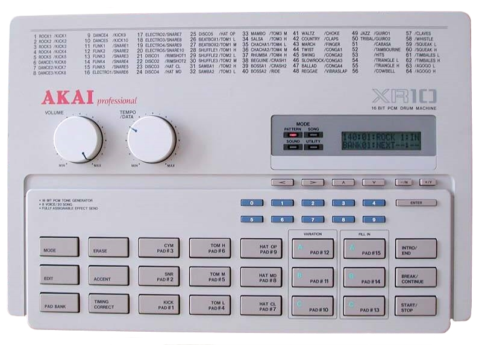

Your patterns, songs, voice edits and samples are kept on this device automatically. The same file loads into the Omega XR10 VST3 plugin, and back.
START/STOP plays the pattern shown on the screen. Type a number on the keypad (two digits, e.g. 0 7) to pick a pattern; while playing it changes at the end of the bar. ◄ ► step through patterns, ▲ ▼ change the tempo, and the TEMPO/DATA knob turns either way (drag it).
VARIATION A/B/C (pads 12, 11, 10) switch the groove at the bar line. FILL IN A/B/C (pads 15, 14, 13) play a fill now and lead into the matching variation. INTRO/END starts with an intro when stopped and plays the ending when playing. BREAK/CONTINUE stops at the bar line and carries on when pressed again.
Recording: press EDIT, then +/Y (RECORD ON), EDIT again to leave the menu, and START. Hit the pads; TIMING CORRECT sets the quantize and ACCENT records at full strength. Hold ERASE and hit a pad to remove that sound. Press ERASE while stopped to clear the part. In the EDIT menu, ▲ ▼ go through length, time signature, swing, click, count-in, copy, name and clear.
MODE (or tap a mode light) goes Pattern → Song → Sound → Utility. In Sound mode, hit a pad and turn DATA to change the sound on it; ▲ ▼ go through level, pan, tune, fine, bend, attack, decay, tone, reverse, loop, FX send, group and velocity sensitivity. In Song mode, ◄ ► pick step / pattern / part / repeat, DATA or −/+ change it, ENTER adds a step, ERASE deletes it. PAD BANK switches between four sets of 15 sounds.
Under Step grid, Import MIDI file reads a drum MIDI file (General MIDI drum notes, channel 10 if the file uses it) into the part you're on, up to 8 bars, with its tempo and time signature. Importing onto a preset copies it to a free user pattern first. Export part as MIDI writes the part, and Export song as MIDI on the Song page writes the whole song, as drums on channel 10. The note layout follows Setup → MIDI → Note map. You can also drop a .mid file onto the page.
Load a sample set (Voices) takes many files at once and puts each on the sound its name says: KICK1.wav, 07 KICK7.wav, Hat CL.wav, TOM2 M.wav… Pick all the files in your XR-10 folder.
The sound runs through the XR10's own circuit, from its service manual: 8 voices played from 16-bit ROM at the machine's rate with no interpolation, the digital envelope (hold and decay), 5-bit level, pan and effect send, the digital mixer, the LC7881 16-bit DACs (a stepped, non-oversampled output), the 12 kHz LC low-pass filters, and the M5216L output amplifiers with the VOLUME and EFFECT VR controls where they sit in the circuit. Patterns are up to 4 bars and the tempo runs 40–296, as on the hardware. Parameters marked as extras below aren't on the XR10.
Every sound has its own pitch, bend, envelope, tone, reverse, loop, pan, effect send and choke group, all on sliders under Voices, with the waveform shown. You can load your own samples onto any of the 64 sounds. The Step grid shows the part you're playing, one bar at a time, for the 15 pads of the bank. The Song page lists the chain step by step.